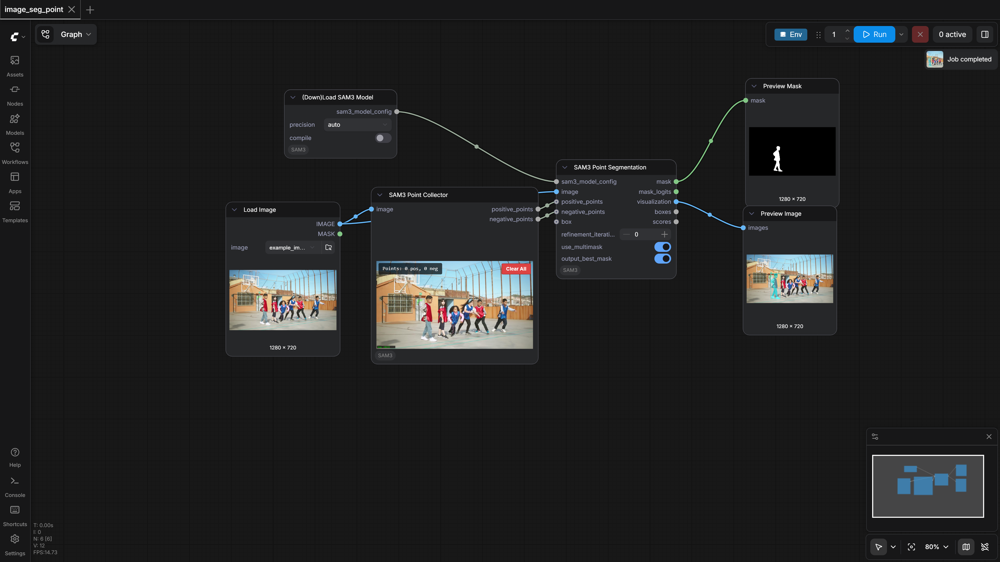
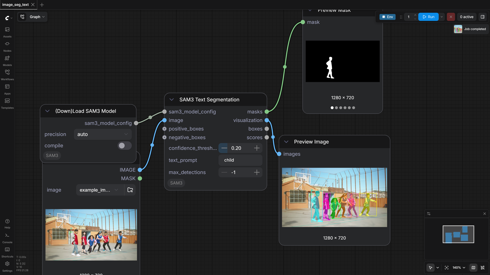
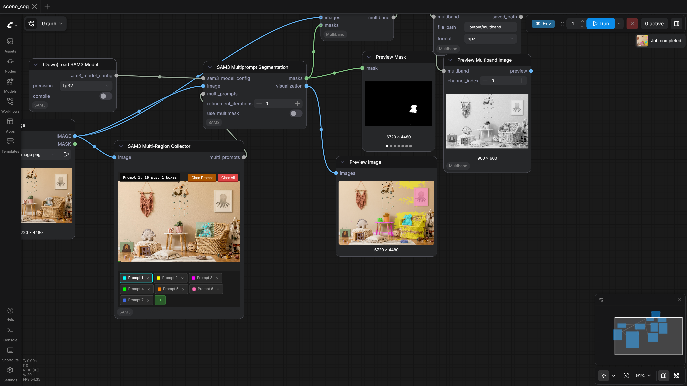
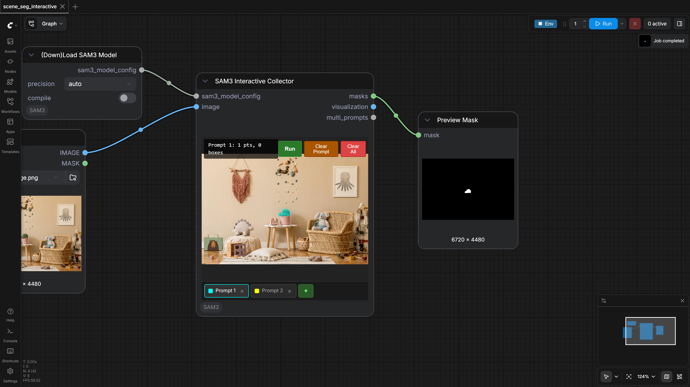

ComfyUI-SAM3
Test Results
2026-03-30 20:27 UTC
Windows-2025Server-10.0.26100-SP0
AMD64 Family 25 Model 1 Stepping 1, AuthenticAMD
100.0%
4 passed
4/4 tests
Workflows
Grid
List

image_seg_point
pass
106.36s

image_seg_text
pass
80.82s

scene_seg
pass
106.20s

scene_seg_interactive
pass
80.62s
Downloaded Models
11 files · 3.2 GB
models/sam3/
3.2 GB
sam3.safetensors
3.2 GB
.cache\huggingface\download\sam3.safetensors.metadata
128.0 B
.cache\huggingface\.gitignore
1.0 B
models/vae_approx/
18.7 MB
taef1_encoder.safetensors
2.4 MB
taesd3_encoder.safetensors
2.4 MB
taef1_decoder.safetensors
2.4 MB
taesd3_decoder.safetensors
2.4 MB
taesdxl_decoder.safetensors
2.3 MB
taesd_decoder.safetensors
2.3 MB
taesdxl_encoder.safetensors
2.3 MB
taesd_encoder.safetensors
2.3 MB
×
‹
›
0.0s / 0.0s
Resource Usage
RAM (GB)
VRAM (GB)